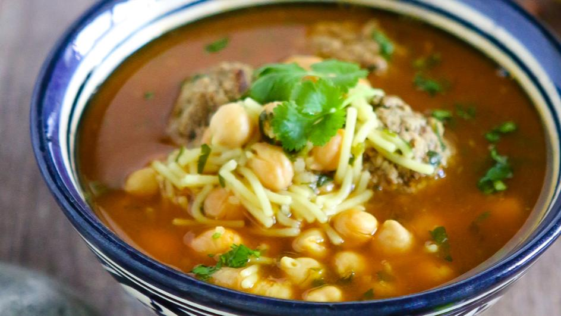

Morocan harira soup
I am very happy to show you my take on what I'm told is Morocco's most popular soup – and once you taste it you'll understand why since the combination of pasta, lentils, and chickpeas is so hearty, so flavorful, and so satisfying, it is without a doubt one of the best soups you'll ever enjoy. If you like a vegetarian harira soup, you can leave off the lamb.

Ingredients
- 2 tablespoons extra-virgin olive oil, plus more for garnish
- 12 ounces boneless lamb shoulder, cut into 1/2 -inch pieces (Optional)
- 1 large yellow onion, diced
- 1 teaspoon kosher salt, divided, or to taste
- 1 ½ teaspoons smoked paprika
- 1 teaspoon ground coriander
- 1 teaspoon ground cumin
- ½ teaspoon ground ginger
- ½ teaspoon freshly ground black pepper
Dirrections
- Step 1
Heat olive oil in a stock pot over medium-high heat and cook cubed lamb until nicely browned and some of the fat has rendered, about 5 minutes.
- 2
Toss in diced onion and a generous pinch of salt. Cook, stirring often, until onion is soft and lightly browned, 4 to 5 minutes. Season with smoked paprika, coriander, cumin, ground ginger, black pepper, and cinnamon. Add minced garlic and cook and stir until fragrant, 30 seconds to 1 minute.
- Step 3
Add tomato paste and cook and stir for about 1 minute. Add chicken broth, crushed tomatoes, and celery; stir until well combined. Add water and bring to a boil over high heat.
- Step 4
Once soup is boiling, add chickpeas and green lentils; season with salt to taste. Reduce heat to medium-low and simmer for 30 minutes, stirring occasionally.
- Step 5
Mix flour and 2 tablespoons cold water in a small bowl and drizzle slurry into the soup to thicken. Bring back to a simmer and add 1/2 of the cilantro and 1/2 of the parsley; stir to combine. Simmer on medium-low heat until meat and lentils are perfectly tender and soup has thickened, about 20 more minutes.
- Step 6
Stir in vermicelli and cook until tender, 10 to 15 minutes. Taste and adjust seasoning with cayenne and salt. Add remaining chopped cilantro and parsley and finish by drizzling lemon juice to taste into the soup.
- Step 7
Serve immediately with a drizzle of olive oil.